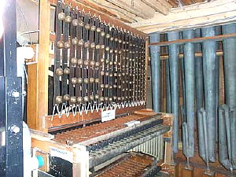
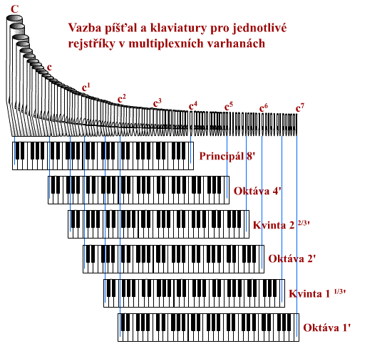
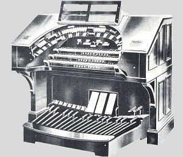
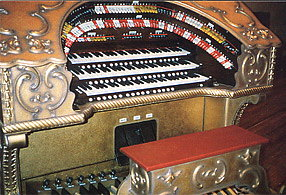
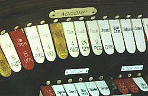
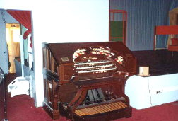
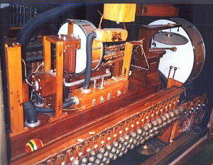
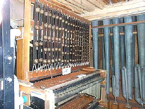

 
Multiplexní varhany (nìkdy nazıvané podle v nich pou�ité skøíòové vzdušnice "unit" èi "unitní") dùslednım vyu�itím transmisí a extenzí (viz popis spojek v úvodní kapitole k trakturám) a tím nìkolikanásobnım vyu�itím píš�al nabízejí vìtší mno�ství rejstøíkù v rùznıch polohách pøi souèasné úspoøe místa a materiálu. Princip mù�eme názornì ilustrovat napø. na principálové skupinì varhan. Následující animace ukazuje principálovou skupinu v klasicky vystavìnıch varhanách. Ka�dı ze šesti rejstøíkù skupiny (øada Principál 8', Oktáva 4', Kvinta 22/3', Oktáva 2', Kvinta 11/3', Oktáva 1') je vystavìn z plné øady píš�al, ka�dá klávesa na klaviatuøe má v ka�dém rejstøíkù svou píš�alu, píš�al je tedy tolik, kolik je poèet tónù (v tomto pøíkladì mají varhany tónovı rozsah C-c4, co� je 61 kláves - píš�al) krát poèet rejstøíkù, èíselnì 61 x 6 = 366 píš�al: |
Srovnejme teï provedení stejné principálové skupiny u multiplexních varhan. Principál 8' je tvoøen opìt øadou 61 píš�al stejnì jako u klasickıch varhan. Další rejstøíky u� ale nemají celou øadu, vyu�ívají v�dy èást øady rejstøíku, ze kterého jsou odvozeny (tady osmistopého Principálu), která je na pøíslušném konci rozsahu (v našem pøíkladì v�dy na horním) doplnìna o patøiènı poèet píš�al. Rejstøík Oktáva 4' je získán z píš�al Principál 8', prvních 12 píš�al je nevyu�itıch (u ètyøstopého rejstøíku klávesa velké C na klaviatuøe odpovídá tónu - píš�ale malé c) a na horním konci rozsahu je naopak 12 píš�al pøidáno (tóny c4 a� c5). Pro získání dalšího rejstøíku nám tak místo 61 píš�al staèí pøidat jen 12 píš�al. Rejstøík Kvinta 22/3' vychází opìt se základního osmistopového rozsahu, nevyu�ito zùstane prvních 18 píš�al (na klávese velké C zní tón malé g), na horním konci naopak pou�ije12 pøidanıch píš�al Oktávy 4', ke kterım je ještì pøidáno dalších 6 píš�al (tóny c5 a� fis5). Podle stejného principu jsou z principálové øady "vyta�eny" i zbıvající rejstøíky Oktáva 2', Kvinta 11/3'a Oktáva 4', pro které je na horním konci pøidáno v�dy po šesti dalších píš�alách (a� po poslední - c7). Celkem tedy potøebujeme pro stejnı poèet rejstøíkù jen 61 + 12 + 6 + 6 + 6 + 6 = 97 píš�al: |
Následující obrázek ukazuje vazbu klaviatury pro
jednotlivé rejstøíky na odpovídající píš�aly z øady. Tato vazba je zde
urèena vıhradnì polohou rejstøíku, klaviatura se proto jen pomyslnì posouvá
smìrem doprava tak, aby první klávesa (velké C) ovládala píš�alu odpovídajícího
tónu (C pro 8', c pro 4', g pro 22/3' atd.): |

Oèíslujeme-li píš�aly zleva doprava (velké C bude
mít èíslo 1, c7 èíslo 97), mù�eme pøiøazení píš�al rejstøíkùm
shrnout do tabulky: |
| Rejstøík |
rozsah klaviatury |
p�aly |
tónovı rozsah |
| Principál 8' | 61 kláves C-c4 |
1 - 61 |
C-c4 |
| Oktáva 4' | 61 kláves C-c4 |
13 - 73 |
c-c5 |
| Kvinta 22/3' | 61 kláves C-c4 |
20 - 80 |
g-g5 |
| Oktáva 2' | 61 kláves C-c4 |
25 - 85 |
c1-c6 |
| Kvinta 11/3' | 61 kláves C-c4 |
32 - 92 |
g1-g6 |
| Oktáva 1' | 61 kláves C-c4 |
37 - 97 |
c2-c7 |
Z tabulky i pøedchozího diagramu je patrné, �e píš�aly multiplexované øady mají více funkcí. Nìkteré z nich patøí jednomu rejstøíku (píš�aly 1 a� 12 a 93 a� 97), jiné dvìma rejstøíkùm (píš�aly 13 a� 19 a 86 a� 92), další tøem atd. Všem šesti rejstøíkùm patøí píš�aly v rozsahu 37 a� 61 (tóny c2-c4). Na jedné stranì je to vıhoda - místo šesti píš�al u klasickıch varhan máme jen jednu, na druhé stranì zní pøi høe ménì píš�al, pokud se "sejde" po�adavek na píš�alu od více rejstøíkù souèasnì (napø. zahrajeme-li souzvuk c1 + c2 pøi zapnutém Principálu 8' a Oktávì 4', mìly by znít píš�aly tónu c1a c2 v Principálu a c2-c3 v Oktávì, u klasickıch varhan to budou ètyøi samostatné píš�aly, u multiplexních varhan je píš�ala c2 jen jedna, tak�e zazní pouze tøi píš�aly). Ještì markantnìjší bude tento rozdíl pøi akordické høe, následující tabulka srovnává situaci pro hranı akord c1-e1-g1-c2 a všechny zapnuté rejstøíky: |
| Multiplexní
varhany |
Vystavìné varhany |
||
| Rejstøík |
zní tóny principálové
øady: |
p�aly |
zní tóny pøíslušného
rejstøíku: |
| Principál 8' | c1-e1-g1-c2 |
25,29,32,37 |
c1-e1-g1-c2 |
| Oktáva 4' | c2-e2-g2-c3 |
37,41,44,49 |
c2-e2-g2-c3 |
| Kvinta 22/3' | g2-h2-d3-g3 |
44,48,51,56 |
g2-h2-d3-g3 |
| Oktáva 2' | c3-e3-g3-c4 |
49,53,56,61 |
c3-e3-g3-c4 |
| Kvinta 11/3' | g3-h3-d4-g4 |
56,60,63,68 |
g3-h3-d4-g4 |
| Oktáva 1' | c4-e4-g4-c5 |
61,65,68,73 |
c4-e4-g4-c5 |
| Celkem: | 17 p�al |
24 p�al |
|
V tabulce je dobøe vidìt vícenásobnı po�adavek na
nìkteré píš�aly (jsou zvıraznìny stejnou barvou ve sloupci s èísly) u
multiplexních varhan. U vystavìnıch varhan se tento jev nevyskytuje, ka�dı
tón má v ka�dém rejstøíku svou píš�alu sám pro sebe. Èást píš�al má dvojí
funkci (c2, g2, c3, c4 a
g4), píš�ala g3 dokonce trojí. V celkovém souètu
pak u tìchto multiplexních varhan pøi høe akordu c1-e1-g1-c2
zní témìø o 30% ménì píš�al, ne� u varhan vystavìnıch (17/24). |
Multiplexní varhany nepou�ívají samozøejmì jen jednu øadu píš�al, vìtšinou jsou postaveny nejménì se tøemi a více øadami, napø. s píš�alami Principálu, Krytu a Flétny. Z tìchto øad (základù), které se mezi sebou liší jednak charakterem a jednak polohou (kryty jsou obvykle vystavìny od 16' polohy - krytá píš�ala má ve skuteènosti polovièní délku, tak�e velikostí odpovídá osmistopému rejstøíku i kdy� zní o oktávu ní�e). Vzhledem k nevıhodnım vlastnostem rejstøíkù v kvintové a terciové poloze (temperované ladìní vùèi základnímu tónu) se tyto tøi øady nìkdy doplòují samostatnou Mixturou. Získáme tak varhany s pøijatelnımi zvukovımi vlastnostmi pøi znaèné úspoøe místa a materiálu. Následující tabulka ukazuje srovnání multiplexních a klasickıch varhan se dvìmi manuály a pedálem a 27 rejstøíky (znaèení tónu C1 odpovídá "kontra C"). Multiplexní varhany mají všechny rejstøíky "vyta�eny" ze tøí øad píš�al, klasické varhany všechny rejstøíky vystavìné: |
Srovnání Multiplexních
a vystavìnıch varhan se dvìmi manuály a pedálem pøi stejné dispozici |
Multiplexní
varhany |
Vystavìné
varhany |
||||
| Principál |
Kryt 92 p�al C1 - g5 |
Flétna 97 píš�al C - c7 |
píš�aly pøíslušného rejstøíku v rozsahu: |
|||
| I.
Manuál |
Principál | 8' | C - c4 |
C - c4 (61
ks) |
||
| Oktáva | 4' | c - c5 |
c - c5 (61
ks) |
|||
| Superoktáva | 2' | c1 - c6
|
c1 - c6
(61 ks) |
|||
| Kvinta | 11/3' | g1 - g6 |
g1 - g6
(61 ks) |
|||
| Burdon | 16' | C1 - c3
|
C1 - c3
(61 ks) |
|||
| Kryt | 8' | C - c4 |
C - c4 (61
ks) |
|||
| Nasat | 22/3' | g - g5 |
g - g5 (61
ks) |
|||
| Flétna dutá | 8' |
C - c4 |
C - c4 (61
ks) |
|||
| Flétna trubicová | 4' |
c - c5 |
c - c5 (61
ks) |
|||
| Tercflétna | 13/5' |
e - e5 |
e - e5 (61
ks) |
|||
| II. Manuál 61 kláves C - c4 |
Principál | 8' | C - c4 |
C - c4 (61
ks) |
||
| Oktáva | 4' | c - c5 |
c - c5 (61
ks) |
|||
| Kvinta | 22/3' | g - g5 |
g - g5 (61
ks) |
|||
| Burdon | 16' | C1 - c3
|
C1 - c3
(61 ks) |
|||
| Kryt | 8' | C - c4 |
C - c4 (61
ks) |
|||
| Pomer krytı | 4' | c - c5 |
c - c5 (61
ks) |
|||
| Flauto amabile | 8' |
C - c4 |
C - c4 (61
ks) |
|||
| Piccolo | 2' |
c1 - c6 |
c1 - c6
(61 ks) |
|||
| Flétna vøetenová | 1' |
c2 - c7 |
c2 - c7
(61 ks) |
|||
| Pedál 27 kláves C - d1 |
Principálbas | 16' | C1 - d |
C1 - d (27
ks) |
||
| Oktávbas | 8' | C - d1 |
C - d1 (27
ks) |
|||
| Oktávbas | 4' | c - d2 |
c - d2 (27
ks) |
|||
| Flétna principálová | 2' | c1 - d3 |
c1 - d3
(27 ks) |
|||
| Subbas | 16' | C1 - d |
C1 - d (27
ks) |
|||
| Bas krytı | 8' | C - d1 |
C - d1 (27
ks) |
|||
| Kvintbas | 51/3' | G - a1 |
G - a1 (27
ks) |
|||
| Flétna basová | 4' |
c - d2 |
c - d2 (27
ks) |
|||
Celkem celı
nástroj: |
281 p�al |
1375 p�al |
||||
Materiálová i prostorová úspora je znaèná, multiplexní
varhany mají v tomto pøíkladì 5 x ménì píš�al, jen jednu vzdušnici
atd. Úspora se ale opìt projeví pøedevším pøi akordické høe, zahrajeme-li
v plénu stejnı akord, jako v pøedchozím pøíkladì (c1-e1-g1-c2
), zní na vystavìnıch varhanách celkem 76 píš�al a na tìchto multiplexních
jen 43 ( o 44% ménì!). Tento rozdíl je u� slyšitelnı i pro necvièené ucho.
Z tabulky je dobøe patrné, �e jednotlivé rejstøíky z té�e øady se opravdu
liší jen názvem (a polohou), flétna dutá, trubicová èi vøetenová je stále
tatá� flétna, zatímco u vystavìnıch varhan bude mít píš�aly jiného tvaru,
intonace a tím i barvy zvuku, zde bude zvuk v�dy stejnı. |
Vıhody multiplexních varhan:
Nevıhody multiplexních varhan:
|
Nedostatky tìchto varhan lze obejít jen sni�ováním
pomìru poètu rejstøíkù a píš�alovıch øad (jinımi slovy zvyšováním poètu
píš�al èi sni�ováním poètu rejstøíkù). Ka�dá další øada se liší charakterem
i intonací a umo�òuje tak zvıšit poèet rejstøíkù bez souèasného zvyšování
poètu funkcí pro jednotlivé píš�aly. Doplnìním samostatné øady v kvintové
(pøípadnì i terciové) poloze lze obejít nevıhodné temperované ladìní vùèi
základu a získat i mixturu. Ta se dokonce v souèasnosti disponuje do tìchto
varhan jako samostanı rejstøík (píš�aly mixtury jsou pomìrnì malé, tak�e
vıhoda malıch rozmìrù nástroje zùstane zachována, zvukové vlastnosti se
ale vylepší podstatnì). |
Multiplexní varhany se tìšily znaèné oblibì v první polovinì minulého století a znaèného rozšíøení dosáhly pøedevším v Americkém regionu pøedevším jako sálové a kabaretní varhany - Theatre and Cinema Organ (ale také varhany v kostelech a modlitebnách). Americké sálové varhany ("Theatre Organ") jsou ve varhanáøství samostatnou kapitolou. V dobì nástupu nìmého filmu a masového vzniku kinosálù v pùvodních divadlech a kabaretech bylo nutné film ozvuèit, ve vìtšinì sálù se tak místo u nás tradièního klavíru objevují varhany. Vzhledem k prostorovému uspoøádání sálù se jedná prakticky v�dy o multiplexní nástroj s Unit vzdušnicí a elektrickou trakturou (viz schéma elektrické traktury UNIT systému v kapitole o elektrickıch spojkách).
|
 
|
Na
fotografiích je obvyklé provedení hracího stolu sálovıch varhan (Wurlitzer
Console). Varhany mají tøi a� ètyøi manuály a pedál, rejstøíkové sklopky
ve formì jazıèkù (na fotografii vlevo) jsou uspoøádány ve tvaru amfiteátru
(oblouku) kolem celého hracího stolu. I pøes ohromnı poèet "rejstøíkù"
se díky multiplexování poèet píš�al pohybuje jen okolo 500 a� 700 (u vystavìnıch
varhan s obdobnou dispozicí by jich bylo 3000 a� 5000). Podle velikosti
nástroje je píš�alovıch øad (základù, ze kterıch se multiplexují ostatní
rejstøíky) jen 5 a� 10, u nejvìtších varhan pak max. 15. |
Hrací stùl je umístìn na boku pódia (nìkdy pod jeho úrovní tak, jak je patrné z fotografie napravo), píš�aly pak podle architektonického øešení sálu buïto v øadì v prostoru za plátnem nebo èastìji ve dvou skupinách po bocích jevištì, nìkdy netradiènì v nikách pod stropem apod. |
Vzhledem ke zpùsobu vyu�ití nástroje jsou tyto varhany navíc vybaveny i rejstøíky zvukovıch efektù. Èást jich pou�ívá píš�aly (napø. pro efekt "klouzavého zvuku"), zbytek jsou rùzné typy perkusí - xylofony, zvony a zvonky, èinely, tympány, bubínky apod. Tento a následující dva obrázky ukazují právì "efektovou" èást nástroje. |
 |
Další informace k tìmto jistì zajímavım nástrojùm najdete napø. na stránkách American Theatre Organ Society (www.atos.org) nebo Theatre Organ Home Page (theatreorgans.com), jejich� souèástí je i mno�ství dalších odkazù. |
Multiplexní varhany se díky postupnému zdokonalování
èasem vyvinuly v nástroje s pøijatelnımi zvukovımi vlastnostmi, pøesto
se klasicky vystavìnım varhanám svım zvukem jen pøibli�ují. Nìkdy je multiplex
jen jednou z èástí vystavìnıch varhan (napø. jen jeden manuál èi èást
rejstøíkù), mnohdy se multiplexní varhany pøidávají pøi rekonstrukci a
rozšiøování starších nástrojù o další rejstøíky (vyu�ije se vıhoda minimalizace
potøebného místa). |
Poznámka: Tato stránka je souèástí Anatomie varhan ®, © Ing. Petr Bernat. Animace © Ing. Petr Bernat.